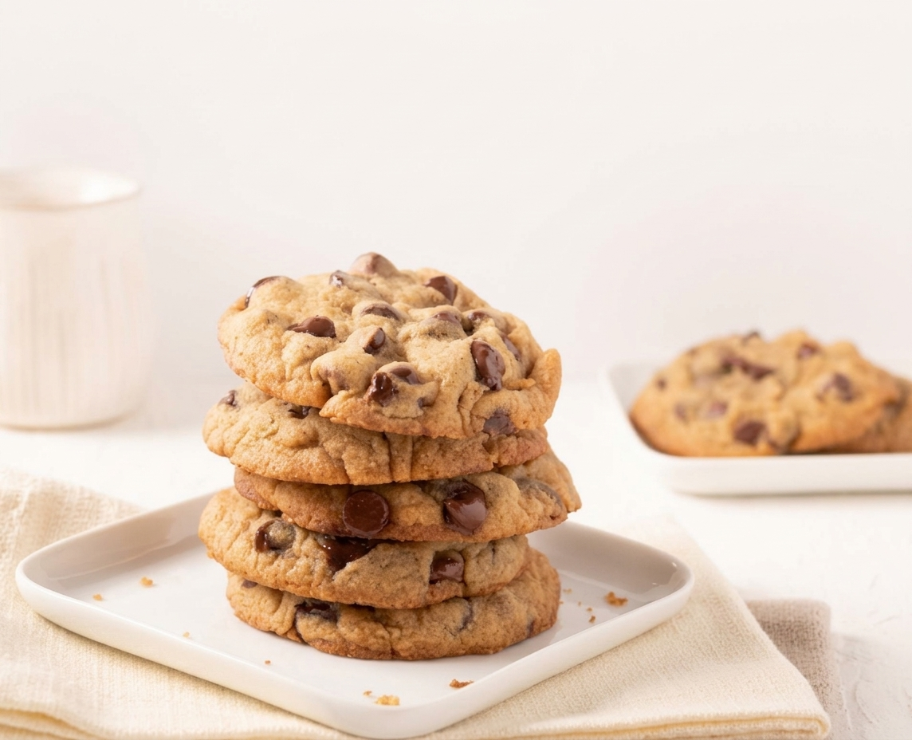

עוגיות שוקולד צ'יפס
עוגיות ביתיות רכות מבפנים וזהובות מבחוץ, עם שוקולד צ'יפס עשיר בכל ביס. מתכון פשוט וטעים שכל המשפחה תאהב.

⏰ זמן הכנה: 30 דקות
🍪 כמות: כ-20 עוגיות
⭐ רמת קושי: קל
מצרכים
- 100 גרם חמאה רכה
- חצי כוס סוכר לבן
- חצי כוס סוכר חום
- 1 ביצה
- 1 כפית תמצית וניל
- 1 וחצי כוסות קמח
- חצי כפית אבקת סודה לשתייה
- קורט מלח
- 1 כוס שוקולד צ'יפס
אופן ההכנה
- מחממים תנור ל-180 מעלות ומרפדים תבנית בנייר אפייה.
- בקערה גדולה מערבבים חמאה רכה, סוכר לבן וסוכר חום עד לקבלת תערובת אחידה.
- מוסיפים ביצה ותמצית וניל ומערבבים היטב.
- מוסיפים קמח, אבקת סודה לשתייה ומלח. מערבבים עד לקבלת בצק אחיד.
- מוסיפים את השוקולד צ'יפס ומערבבים בעדינות.
- יוצרים כדורים קטנים מהבצק ומניחים בתבנית עם רווחים ביניהם.
- אופים במשך 10–12 דקות, עד שהקצוות מזהיבים מעט.
- מוציאים מהתנור ומניחים לעוגיות להתקרר לפני שמעבירים אותן מהתבנית.
- מגישים ונהנים מעוגיות שוקולד צ'יפס טעימות!